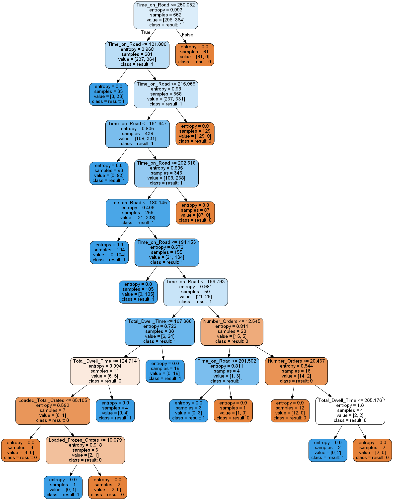
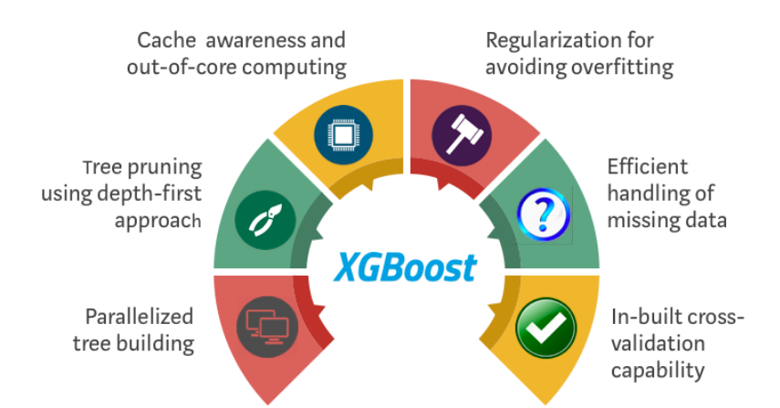
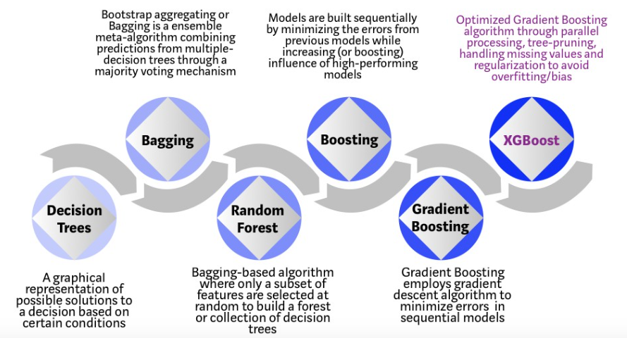
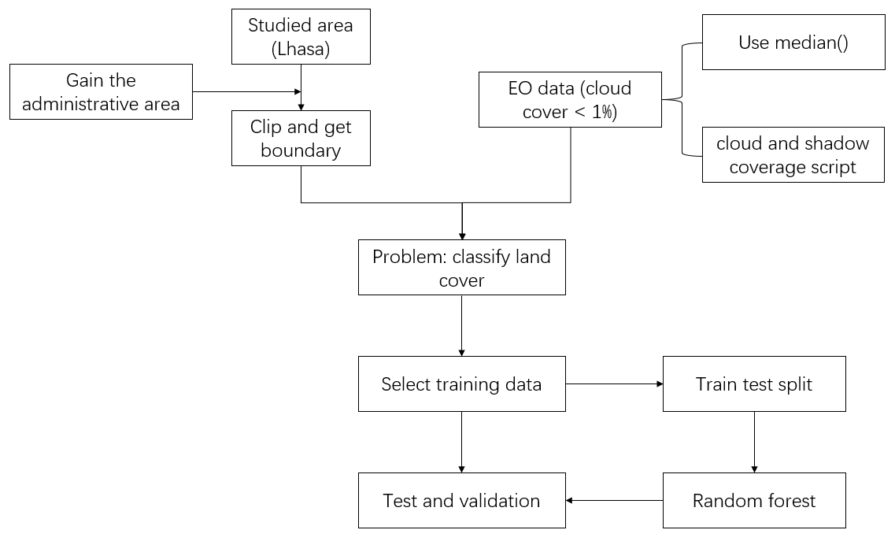
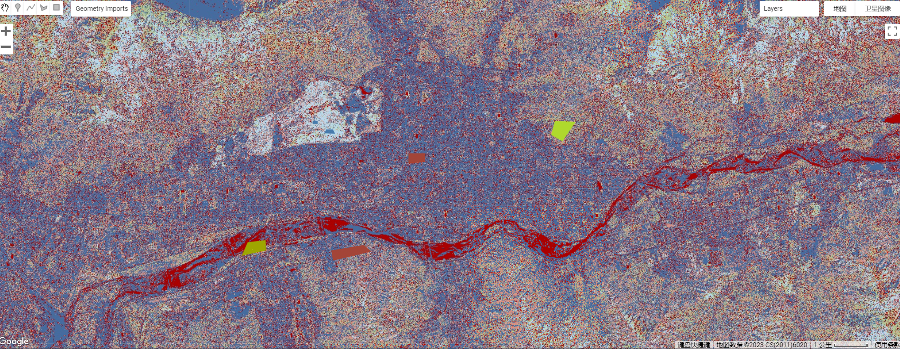
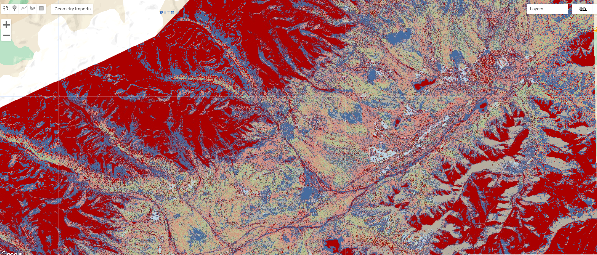
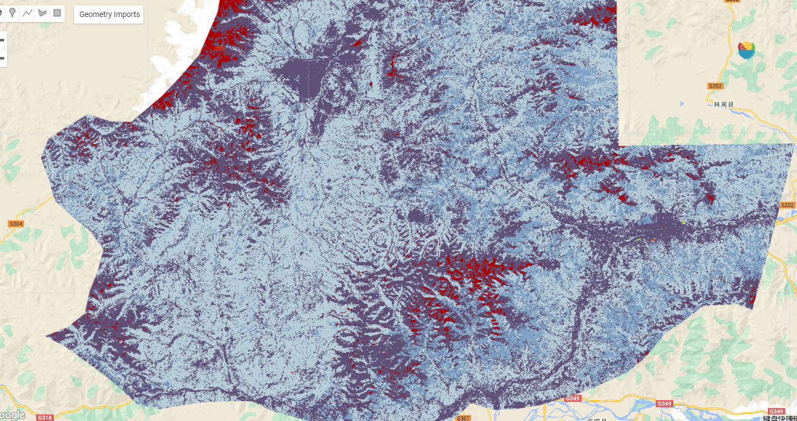
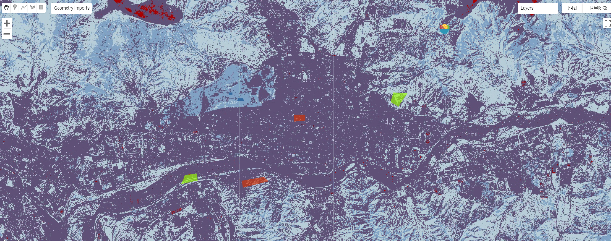
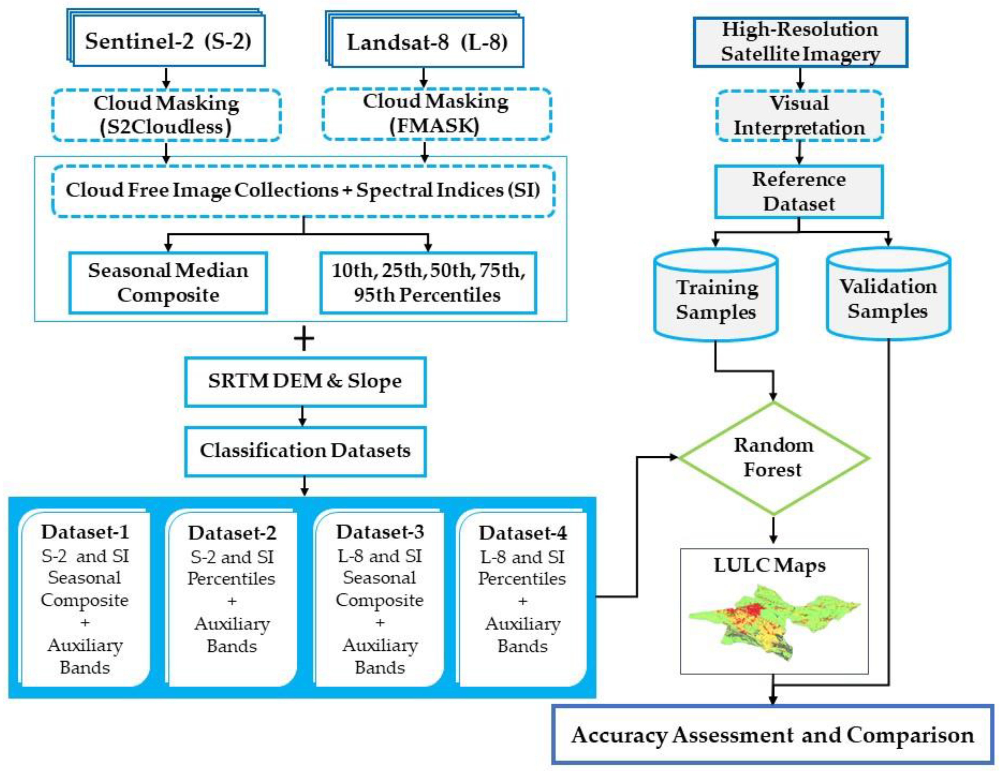

6 Week 6: Classification I
6.1 Summary
This week I learned how to build a model to solve classification problem.
6.1.1 Machine learning in remote sensing
supervised learning:
regression problem:
regression tree
support vector regression
classification problem
decision tree
random forest
boosting and Xgboost
unsupervised learning:
- clustering: K-means and GMM
6.1.1.1 Decision tree
The algorithm works by recursively partitioning the feature space into smaller regions using a series of binary splits. At each split, the algorithm selects the feature that best separates the data into the target classes or predicts the target variable. The split is made based on the value of the selected feature, and the data is split into two or more subgroups based on the selected threshold value. This process is repeated until a stopping criterion is met, such as a minimum number of observations in a subgroup, or no further improvement in the classification or regression accuracy.

Classification algorithm and Regression Tree (CART) is a typical algorithm to calculate the entropy when each branch generates. the classic function is gini index.
\(Entropy(s)= -P(yes)log2 P(yes)- P(no) log2 P(no)\)
\(Gini Index= 1- ∑^{j}_{j=0}P_j^2\)
To visualize a decision tree, we can use graphviz, this tool can convert .dot file (describe area of root, node) into graph. Here, in this case, when entropy is equal to 0, the tree has one leaf.

6.1.1.2 Random forest
Random forest is an ensemble learning method that combines multiple decision trees to make more accurate predictions.
The random forest algorithm works by constructing multiple decision trees during training time and outputting the class that is the mode of the classes (classification) or mean prediction (regression) of the individual trees. Each tree is constructed using a random subset of the training data and a random subset of the features. This helps to prevent overfitting and reduces variance in the predictions.
First step is how do use limited dataset to generate different inputs of each decision tree, this process is called bootstrap sampling. the algorithm will compare the mean and standard deviation of each sampling data to ensure they are not the same sampling data.

Then, the sampling data will be input into different decision tree, finally, the output may be the average value of result or a majority voting mechanism.

There are also some potential drawbacks of the random forest algorithm, which includes its computational complexity and its tendency to perform poorly on datasets with imbalanced classes. However, with proper tuning and optimization, these limitations can be overcome.
6.1.1.3 Xgboost
Before introducing Xgboost it is boosting, both boosting and random forests are essemble learning algorithms that use multiple decision trees. When processing the output of multiple decision trees, boosting calculates the residuals of each tree and minimizes them by constructing a loss function for the residuals to obtain the optimal solution.

Then, how to get the minimum value of loss function, Xgboost uses gradient boosting machine (GBM) and make improvement.

In general, the relationship between the algorithms below:

6.1.2 GEE classification
This is a workflow of my training, testing and validation process, I use Lhasa city, Tibet as point of interests.

6.1.2.1 Training
I selected several typical land types in Lhasa city because the accuracy of model depends on the accuracy of labels, so the classification of the various different land types had to be accurate in order for the resulting model to work better.
urban area: (with high density) one community of Lhasa city center, Lhasa financial center, universities
water: the Namucuo in northern Lhasa, Lhasa river
wetland: Lalu Wetland National Nature Reserve (sample many times)
bare earth: Zayaba Monastery, mountain area
forest: Lhasa Nimu National Forest Park,
ice land: the top of those mountains
urban area: (with low density) living area, villages around the city center
6.1.2.2 Testing
- Example 1

As the picture shows, this is the centre of Lhasa, the red coloured part is the Lhasa River flowing through the city, the blue is the main city with a high population density, while the white part in the upper left corner is a larger wetland, the periphery of the city centre is bare ground.
- Example 2

In this example, the red part represents the water part and the blue part is the mountain peak and is above 6,000m, therefore the peaks are covered in snow all year round. Comparing this with the map, I found that the area is the Nyingchi Tanggula range, where you can see that the ridges run from north-east to south-west, and the green parts are mixed coniferous forests, located on the mountainsides and at the foot of the mountains. The thin blue line in the bottom right corner is the Qinghai-Tibet Highway, which runs along the Nyingchi Tanggula Range.
However, this method depends on the accuracy of the training data I selected before, I introduced another more accurate method.
6.1.2.3 Adjustment
Initially with 7 categories, I found the accuracy of the validation dataset to be around 80% and the OOB error to be around 17%, independent of both how many datasets were divided into training sets and how many trees were used in random forest. I realized it is possible to reduce the categories.
When combining urban_high and urban_low, I saw a significant increase in those indicators, based on this finding, I then combine the forest and wetland land types, and compare the indicators with ice land and without ice land.
out of bag error estimate: 7.56%
Training overall accuracy: 98.91%
Validation overall accuracy: 92.38%


The results show that the indicators divided into four categories are better than the five categories. although 3 categories performs better than 4 categories, urban features and river features are not well identified and therefore 3 categories are not used.
urban area
water area
bare earth
wetland
It is true that increasing the number of trees in a decision tree can help to improve accuracy, and increasing from 100 to 300 trees can improve metrics such as accuracy, but after increasing to 500 trees there is no significant change.
6.2 Application
- Tehran Province study
Nasiri et al. (2020) used the Google Earth Engine (GEE) cloud computing platform to create cloud-free Sentinel-2 and Landsat-8 time series for Tehran Province (Iran) up to 2020 and to find out how the two synthetic methods and the spectro-temporal metrics extracted from the satellite time series affect the machine learning classifier ability to generate accurate LULC maps. They used two synthetic methods, seasonal composites and percentile indicators, for defining four datasets based on satellite time series, vegetation indices and topographic layers. A random forest classifier was used for Land Use and Land Cover (LULC) classification and to identify the most important variables. Accuracy assessments showed that Sentinel2 outperformed the Landsat8 spectral time metrics at the overall and category level.


Both S-2 and L-8 show phenological variation in the LULC categories, particularly on agricultural land and woodland, is effectively provided by seasonal composites.

This picture is a comparison between S-2 and L-8 to distinguish different land cover between bare and artificial land, grassland and harvested farmland. It can be shown that boundary of different land types S-2 identified is better than L-8.

The study concluded that the MODIS time series and the extracted spectro-temporal metrics are a reliable source of accurate LULC mapping. However, some differences between datasets were observed. For example, the LULC maps generated from the S-2 time series were more accurate than those generated from the L-8 time series. Comparisons between the combination methods showed that the seasonal median combination outperformed the percentile index in both the S-2 and L-8 time series. The results demonstrate the validity of the vegetation indices, particularly NDVI and NDBI, and the S-2 red border, with respect to the importance of the variables.
6.3 Reflection
In this week, I know how to select my own ROI, process graphics and classify different land type based on decision tree and random forest.
There are several problems I found in process:
Hyperparameter tuning was crucial when training the classifier, as I couldn’t decide exactly how many decision trees I needed to make the classifier work well when training the model, and I kept trying to manually tune it throughout the process, and should probably try looking for hyperparameters, such as grid search.
In practice, I found that if I defined too many types, the accuracy of the test set was consistently below 90% and the out-of-bag error was above 10%. Although the training set performed well, this suggested that I had too many categories, which led to underfitting, and I merged some categories to improve the accuracy of the test set and reduce the out-of-bag error y. I am not sure if this is a good idea. I’m not quite sure if this is reasonable